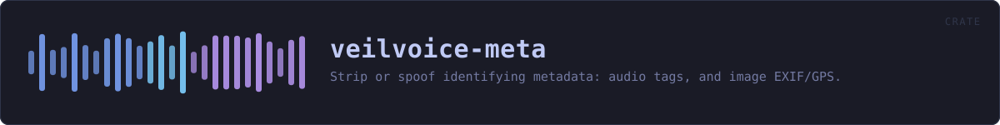

veilvoice-meta
Strip or spoof identifying metadata: audio tags, and image EXIF/GPS.
reference · the same page on GitHub
Strip or spoof the identifying metadata that rides along with media files.
Why this exists
De-identifying a voice accomplishes nothing if the file still says who recorded it. A phone recording routinely carries the device model, the recording software, a precise timestamp and, for images, GPS coordinates accurate to a few metres. That is often a far easier way to identify someone than analysing their voice, and it survives every DSP transform because it is not in the audio at all.
Strip versus spoof
Removing every tag is not always the least conspicuous choice. A file with no metadata whatsoever is itself a signal: it says the sender was trying to hide something, and it stands out in a set of otherwise ordinary files. Policy therefore offers two approaches:
Policy::Stripremoves everything. Best when the file is expected to be sanitised anyway, or when any false statement would be worse than an obvious absence.Policy::Realisticreplaces the tags with plausible, non-identifying values so the file looks unremarkable rather than scrubbed.
What this crate cannot do
It removes container metadata. It cannot remove information encoded in the media itself: a photograph still shows the room it was taken in, and audio still carries its room acoustics and background noise. Nor does it touch filesystem timestamps or the filename, both of which are outside the file, callers that care must handle those separately.
In plain words
This strips the hidden labels off a file.
Photographs and recordings carry information you never typed: where the picture was taken, which phone or microphone made it, what the file was called before, sometimes a name. Removing the sound of a voice and leaving that behind would be pointless, so this takes it out -- not by blanking the fields, but by removing the parts of the file that hold them.
HOW THE CRATE FITS TOGETHER
Every arrow is a crate:: or super:: path one module actually uses, read out of the source rather than drawn by hand.
The same graph as Mermaid source
%%{init: {"theme":"base","themeVariables":{"background":"#1a1b26","primaryColor":"#1f2335","primaryTextColor":"#c0caf5","primaryBorderColor":"#7aa2f7","secondaryColor":"#16161e","tertiaryColor":"#16161e","lineColor":"#737aa2","textColor":"#c0caf5","mainBkg":"#1f2335","nodeBorder":"#7aa2f7","clusterBkg":"#16161e","clusterBorder":"#2f3549","fontFamily":"ui-monospace, SFMono-Regular, Consolas, monospace","fontSize":"14px"}}}%%
flowchart TD
n_lib(["lib.rs<br/>121 lines"])
n_audio["audio.rs<br/>278 lines"]
n_image["image.rs<br/>210 lines"]
n_wav["wav.rs<br/>344 lines"]
n_audio --> n_wav
click n_lib href "https://github.com/tilas01/veilvoice/blob/main/crates/veilvoice-meta/src/lib.rs" "open the source"
click n_audio href "https://github.com/tilas01/veilvoice/blob/main/crates/veilvoice-meta/src/audio.rs" "open the source"
click n_image href "https://github.com/tilas01/veilvoice/blob/main/crates/veilvoice-meta/src/image.rs" "open the source"
click n_wav href "https://github.com/tilas01/veilvoice/blob/main/crates/veilvoice-meta/src/wav.rs" "open the source"This site loads no third-party script, so it cannot run Mermaid; the diagram above is the same nodes and edges drawn by the generator instead. GitHub renders the source below directly.
THE FILES
| File | Lines | What it is |
|---|---|---|
audio.rs | 278 | Audio tag removal and replacement. |
image.rs | 210 | Image EXIF/GPS removal. |
lib.rs | 121 | Strip or spoof the identifying metadata that rides along with media files. |
wav.rs | 344 | Chunk-level RIFF/WAVE metadata removal. |
wav_fuzz.rs | 299 | Randomised robustness testing for the RIFF chunk walker. |